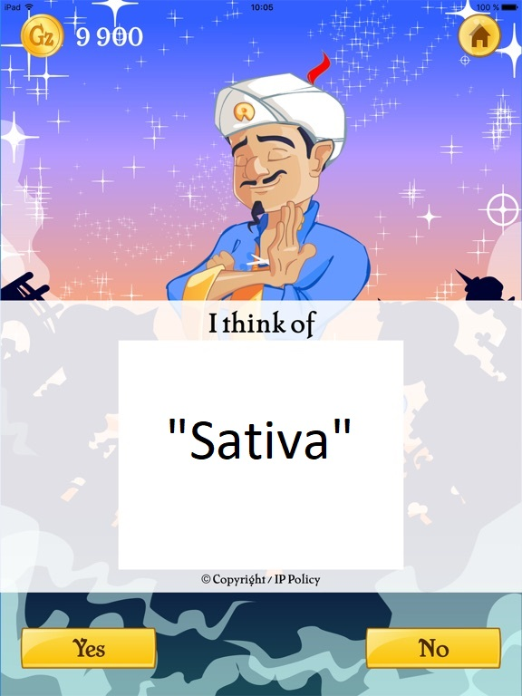

# A tibble: 2,351 × 69
Strain Type Rating Effects Flavor Creative Energetic Tingly Euphoric Relaxed
<chr> <chr> <dbl> <chr> <chr> <dbl> <dbl> <dbl> <dbl> <dbl>
1 100-Og hybr… 4 Creati… Earth… 1 1 1 1 1
2 98-Wh… hybr… 4.7 Relaxe… Flowe… 1 1 0 0 1
3 1024 sati… 4.4 Uplift… Spicy… 1 1 0 0 1
4 13-Da… hybr… 4.2 Tingly… Apric… 1 0 1 0 1
5 24K-G… hybr… 4.6 Happy,… Citru… 0 0 0 1 1
6 3-Bea… indi… 0 None None 0 0 0 0 0
7 3-Kin… hybr… 4.4 Relaxe… Earth… 0 0 0 1 1
8 303-Og indi… 4.2 Relaxe… Citru… 0 0 0 1 1
9 3D-Cbd sati… 4.6 Uplift… Earth… 0 0 0 0 1
10 3X-Cr… indi… 4.4 Relaxe… Earth… 0 0 1 1 1
# ℹ 2,341 more rows
# ℹ 59 more variables: Aroused <dbl>, Happy <dbl>, Uplifted <dbl>,
# Hungry <dbl>, Talkative <dbl>, Giggly <dbl>, Focused <dbl>, Sleepy <dbl>,
# Dry <dbl>, Mouth <dbl>, Earthy <dbl>, Sweet <dbl>, Citrus <dbl>,
# Flowery <dbl>, Violet <dbl>, Diesel <dbl>, `Spicy/Herbal` <dbl>,
# Sage <dbl>, Woody <dbl>, Apricot <dbl>, Grapefruit <dbl>, Orange <dbl>,
# Pungent <dbl>, Grape <dbl>, Pine <dbl>, Skunk <dbl>, Berry <dbl>, …Decision Trees
Setup
Today’s data concerns strains of cannabis, which have the types of sativa, indica, or hybrid:
Data Cleaning
Removing ALL Missing Values
Notice I’m using a - before the variables I do not want to remove missing values from.
Setting-up CV & Declaring a Recipe
You can use a . to stand in for the name of every variable in the dataset!
You can remove variables you do not want to use as predictors using the step_rm() function.
Previewing the Recipe
── Recipe ───────────────────────────────────────────────────────────────────────────────────────────────────
── Inputs
Number of variables by role
outcome: 1
predictor: 68
── Operations
• Variables removed: Strain, Effects, FlavorLogistic Regression
→ A | warning: ! Logistic regression is intended for modeling binary outcomes, but there are 3 levels in the outcome.
ℹ If this is unintended, adjust outcome levels accordingly or see the `multinom_reg()` function.
→ B | warning: prediction from rank-deficient fit; attr(*, "non-estim") has doubtful cases
→ C | error: Failed to compute `roc_auc()`. What happened?
Problem 1: There are three categories in Type. How do we interpret the log-odds for multiple groups?
Problem 2: The model is trying to fit 65 predictor coefficients! That’s a LOT.
Discriminant Analysis
→ A | warning: variables are collinear
→ B | warning: no non-missing arguments to min; returning Inf
→ C | error: variables 15 16 appear to be constant within groupsWhat happened now?
Problem 1: There are still 65 predictors, i.e., 65 dimensions!
KNN
No errors!!!!
How’d we do?
knn_fit <- knn_wflow %>%
fit_resamples(cann_cvs,
metrics = metric_set(accuracy, roc_auc, precision, recall)
)
knn_fit %>% collect_metrics()# A tibble: 4 × 6
.metric .estimator mean n std_err .config
<chr> <chr> <dbl> <int> <dbl> <chr>
1 accuracy multiclass 0.490 5 0.0150 Preprocessor1_Model1
2 precision macro 0.459 5 0.0180 Preprocessor1_Model1
3 recall macro 0.461 5 0.0166 Preprocessor1_Model1
4 roc_auc hand_till 0.672 5 0.0134 Preprocessor1_Model1Woof!
Decision Trees
Let’s play 20 questions
Is this strain described as “Energetic”?

Let’s play 20 questions.
Is this strain described as tasting like “Pineapple”?

Akinator says…


Declaring a Model
Specifying a Workflow
Decision Trees
tree_fit <- tree_wflow %>%
fit_resamples(cann_cvs,
metrics = metric_set(accuracy, roc_auc, precision, recall)
)
tree_fit %>% collect_metrics()# A tibble: 4 × 6
.metric .estimator mean n std_err .config
<chr> <chr> <dbl> <int> <dbl> <chr>
1 accuracy multiclass 0.617 5 0.00691 Preprocessor1_Model1
2 precision macro 0.597 5 0.0119 Preprocessor1_Model1
3 recall macro 0.556 5 0.0147 Preprocessor1_Model1
4 roc_auc hand_till 0.734 5 0.00934 Preprocessor1_Model1Inspecting the Fit
$actions
$actions$model
$spec
Decision Tree Model Specification (classification)
Computational engine: rpart
$formula
NULL
attr(,"class")
[1] "action_model" "action_fit" "action"
$fit
parsnip model object
n= 2305
node), split, n, loss, yval, (yprob)
* denotes terminal node
1) root 2305 1118 hybrid (0.51496746 0.29804772 0.18698482)
2) Sleepy< 0.5 1580 629 hybrid (0.60189873 0.14303797 0.25506329)
4) Energetic< 0.5 981 344 hybrid (0.64933741 0.20591233 0.14475025) *
5) Energetic>=0.5 599 285 hybrid (0.52420701 0.04006678 0.43572621)
10) Relaxed>=0.5 281 104 hybrid (0.62989324 0.04982206 0.32028470) *
11) Relaxed< 0.5 318 147 sativa (0.43081761 0.03144654 0.53773585) *
3) Sleepy>=0.5 725 264 indica (0.32551724 0.63586207 0.03862069) *
attr(,"class")
[1] "stage_fit" "stage" Decision Trees
Note the rpart.plot() function lives in the rpart.plot package!

What might we change?
Hyperparameters!
Tree Depth
tree_depth: How many splits will we “allow” the tree to make?
- If we allowed infinite splits, we’d end up with only on observation in each “leaf”. This will badly overfit the training data!
- If we allow only one split, our accuracy won’t be that great.
- Default in
rpart: Up to 30
Minimum Observations
min_n: How many observations have to be in a “leaf” for us to be allowed to split it further?
- If
min_nis too small, we’re overfitting. - If
min_nis too big, we’re not allowing enough flexibility. - Default in
rpart: 20
Tuning min_n
Let’s try varying the minimum number of observations in a leaf between 2 and 20.
# A tibble: 4 × 1
min_n
<int>
1 2
2 8
3 14
4 20Start wide!
Tuning with cross-validation takes a long time! Do yourself a favor and start with a small but wide grid.
Setting up the tuning
tree_mod <- decision_tree(min_n = tune()) %>%
set_engine("rpart") %>%
set_mode("classification")
tree_wflow <- workflow() %>%
add_recipe(cann_recipe) %>%
add_model(tree_mod)
tree_grid_search <-
tune_grid(
tree_wflow,
resamples = cann_cvs,
grid = tree_grid
)
tuning_metrics <- tree_grid_search %>% collect_metrics()Inspecting the fits
# A tibble: 8 × 7
min_n .metric .estimator mean n std_err .config
<int> <chr> <chr> <dbl> <int> <dbl> <chr>
1 2 accuracy multiclass 0.614 5 0.0127 Preprocessor1_Model1
2 2 roc_auc hand_till 0.737 5 0.0128 Preprocessor1_Model1
3 8 accuracy multiclass 0.614 5 0.0127 Preprocessor1_Model2
4 8 roc_auc hand_till 0.737 5 0.0128 Preprocessor1_Model2
5 14 accuracy multiclass 0.614 5 0.0127 Preprocessor1_Model3
6 14 roc_auc hand_till 0.737 5 0.0128 Preprocessor1_Model3
7 20 accuracy multiclass 0.614 5 0.0127 Preprocessor1_Model4
8 20 roc_auc hand_till 0.737 5 0.0128 Preprocessor1_Model4What’s the best choice of min_n?
What else can we change?
How is rpart choosing to stop splitting?
cost complexity = how much metric gain is “worth it” to do another split?
- Default: Split must increase
accuracyby at least 0.01.
Cost complexity
Cost Complexity
tree_mod <- decision_tree(cost_complexity = tune(),
tree_depth = tune(),
min_n = tune()) %>%
set_engine("rpart") %>%
set_mode("classification")
tree_wflow <- workflow() %>%
add_model(tree_mod) %>%
add_recipe(cann_recipe)
tree_grid_search <-
tune_grid(
tree_wflow,
resamples = cann_cvs,
grid = tree_grid
)
tuning_metrics <- tree_grid_search %>% collect_metrics()Tuning
# A tibble: 16 × 9
cost_complexity tree_depth min_n .metric .estimator mean n std_err
<dbl> <int> <int> <chr> <chr> <dbl> <int> <dbl>
1 0.0000000001 1 2 accuracy multiclass 0.613 5 0.0108
2 0.0000000001 1 2 roc_auc hand_till 0.680 5 0.00900
3 0.1 1 2 accuracy multiclass 0.613 5 0.0108
4 0.1 1 2 roc_auc hand_till 0.680 5 0.00900
5 0.0000000001 15 2 accuracy multiclass 0.558 5 0.00924
6 0.0000000001 15 2 roc_auc hand_till 0.653 5 0.00976
7 0.1 15 2 accuracy multiclass 0.613 5 0.0108
8 0.1 15 2 roc_auc hand_till 0.680 5 0.00900
9 0.0000000001 1 40 accuracy multiclass 0.613 5 0.0108
10 0.0000000001 1 40 roc_auc hand_till 0.680 5 0.00900
11 0.1 1 40 accuracy multiclass 0.613 5 0.0108
12 0.1 1 40 roc_auc hand_till 0.680 5 0.00900
13 0.0000000001 15 40 accuracy multiclass 0.592 5 0.00868
14 0.0000000001 15 40 roc_auc hand_till 0.750 5 0.0119
15 0.1 15 40 accuracy multiclass 0.613 5 0.0108
16 0.1 15 40 roc_auc hand_till 0.680 5 0.00900
# ℹ 1 more variable: .config <chr>Tuning
# A tibble: 6 × 9
cost_complexity tree_depth min_n .metric .estimator mean n std_err
<dbl> <int> <int> <chr> <chr> <dbl> <int> <dbl>
1 0.0000000001 1 2 accuracy multiclass 0.613 5 0.0108
2 0.1 1 2 accuracy multiclass 0.613 5 0.0108
3 0.1 15 2 accuracy multiclass 0.613 5 0.0108
4 0.0000000001 1 40 accuracy multiclass 0.613 5 0.0108
5 0.1 1 40 accuracy multiclass 0.613 5 0.0108
6 0.1 15 40 accuracy multiclass 0.613 5 0.0108
# ℹ 1 more variable: .config <chr>Try it!
Fit a final model with the selected hyperparameters
Report some metrics for the final model
Plot the tree (look at the previously provided code)
Interpret the first two levels of splits in plain English.